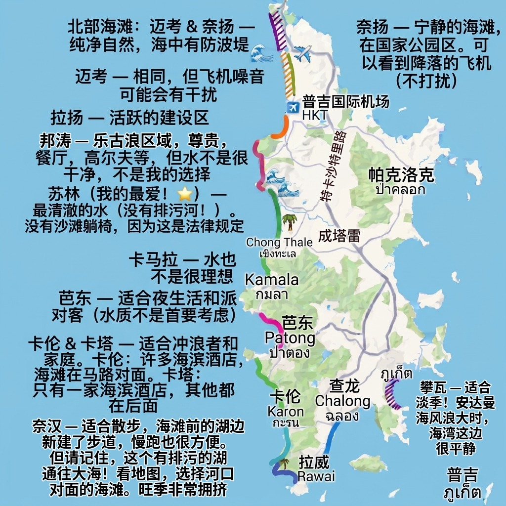
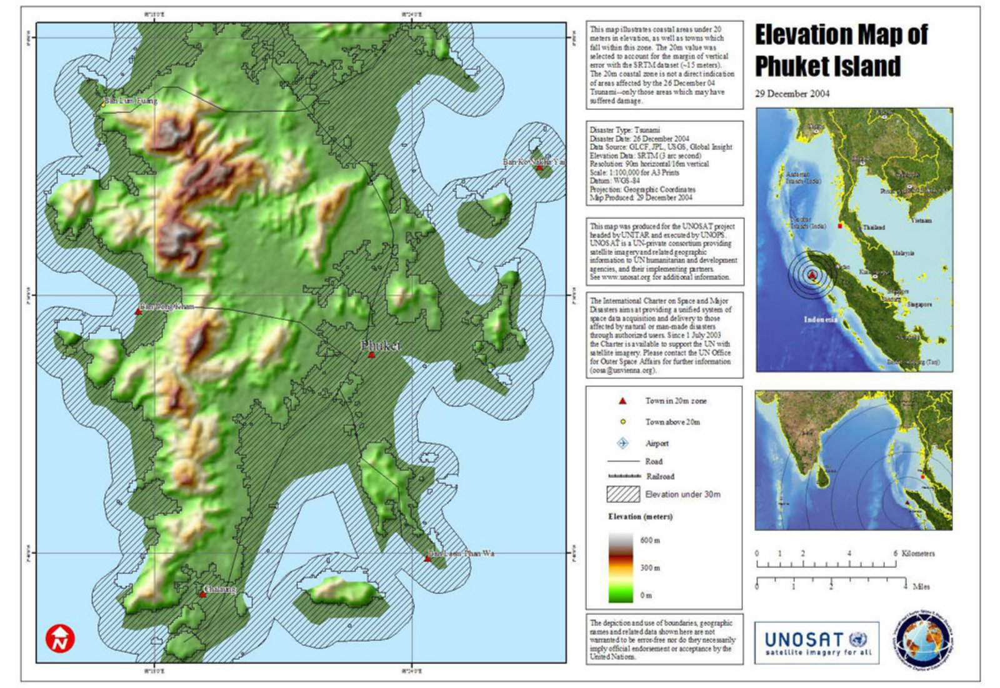

旅游
旅游路线之外的泰国。
普吉岛海滩

我的推荐：看重海水干净——苏林、奈扬、香蕉海滩（Banana Beach）；看重配套设施——邦涛、奈汉；冲浪——卡塔海滩；宁静和看飞机降落——奈扬；在岸边就能浮潜——Ao Sane海滩。
点击地图可查看大图。
海啸：看海拔高度
普吉岛西海岸直面安达曼海，在2004年受灾最严重。攀瓦所在的东海岸有岛屿遮挡。海啸很少发生，但在海边选择住处时，不仅要看离海滩的距离，还要看海拔高度：越高越安全。
- 低于5米——海啸风险较高，雨季还可能被淹。
- 5至10米——风险较低，但要提前了解往哪里撤离。
- 10米及以上——明显更安心。
这只是参考，而不是官方标准。海拔可以在地形图或带地形图层的地图应用中查看。

规则：如果感到强烈地震，或者海水突然从岸边退去，不要等警报，立即前往高处，或者坚固的多层建筑的高层。沿海滩设有海啸疏散路线标志（Tsunami Evacuation Route）——第一天就去看看它们指向哪里。
何时去：普吉岛的季节
选择季节的规则：如果预算有限，就选淡季出行，这时住宿和游览的价格最低。游泳要选能避开季风浪的海滩：东海岸的攀瓦，或者奈扬——它在西海岸，也有浪，但防波堤能减弱海浪。
| 旺季 | 过渡期 | 淡季 | |
|---|---|---|---|
| 时间 | 12月—3月 | 4月—5月初，10月底—11月 | 5月—10月 |
| 天气与海况 | 干燥晴朗，海面平静 | 过渡期：4月最热，5月和10月雨季开始或结束 | 多雨，多为午后短时阵雨；西海岸有浪和危险的离岸流 |
| 价格 | 最高，尤其是新年前后 | 比旺季低 | 住宿和游览最便宜，机票也常常更便宜 |
| 优点 | 天气最好，所有海滩都能游泳，所有岛屿和海洋公园开放 | 天气仍然或已经不错，人少，价格低 | 便宜，游客少，海滩空旷，岛上一片葱绿；卡塔和卡伦有浪——冲浪季 |
| 缺点 | 贵，人多，住宿和游览需提前预订 | 天气不太稳定，4月非常热 | 西海岸海滩常挂红旗——因离岸流禁止游泳；斯米兰群岛和素林群岛关闭；出海项目可能因风暴取消 |
海滩上挂红旗——禁止游泳。原因是离岸流：被海浪推上岸的海水会形成一股狭窄而强劲的水流回到海里，把游泳者带离岸边。即使是游泳好手也无法逆流游回。如果被离岸流卷走，不要与它对抗——先平行于海岸游，离开水流后再游向岸边。季风季节，西海岸每年都有人溺亡，他们没有理会红旗。这种事故常常就发生在救生员眼前：有救生员并不等于安全，他们无法照顾到每个人，也无法把每个人都从强流中救出。红旗的意思是“不要下水”，即使旁边就有救生塔。海水温度全年约29–30 °C，所以淡季也能游泳——只是要选对海滩。
季风季节的海上安全规则由泰国国家旅游局（TAT）发布。国家公园的关闭日期由国家公园、野生动植物和植物保护厅每年公布。
我的个人推荐：考艾国家公园
我在泰国最喜欢的地方不是海滩，而是丛林。考艾是泰国第一个国家公园：1962年建立，2005年起成为联合国教科文组织世界遗产“东巴耶延山—考艾森林保护区”的一部分。公园距曼谷约三小时车程，最近的城镇是北冲（Pak Chong）。
在这里可以看到马路上的野象、长臂猿和犀鸟，还可以步行去Haew Suwat瀑布和Haew Narok瀑布。从海滩过来，山里的凉爽会让人惊喜：晚上需要穿外套。最佳时间是11月至次年4月。
在野外观察大象是一种享受，而看到驮着游客、被象夫用钩子驱使而流泪的大象，则是一种悲哀。
规则：去大象自由生活的地方看大象，而不是去骑大象的地方。在路上遇到大象时，请保持距离，不要下车。
公园每天6:00至18:00开放。门票可提前在QueQ应用中购买，也可在入口购买，每天入园都需付费。外国游客的票价高于泰国公民，且票价最近有所调整——请查看公园官网。